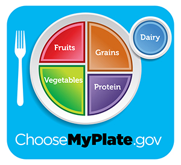

What are my daily nutrient requirements?
You can view your personal daily requirements for macronutrients, vitamins, and minerals with this tool, which is used by health professionals. Simply fill in your information and your daily nutrient needs will be calculated. Then you can use this information to search for recipes more suited to your individual nutrient needs.
-
There are so many confusing claims about nutrition in the media and I don't know which are reliable. Where can I find evidence to back up these claims?
The Nutrition Evidence Library is a great resource to find summaries of scientific evidence (based on peer reviewed scientific articles) for various nutrition topics, ranging from food/dietary patterns, body weight, nutrients, and more. It will even give you a description of how strong the evidence supports this summary (if there is a limited amount of evidence, moderate amount, etc).
For example, how effective are high protein low carb diets for weight loss?
Answer summary from the Nutrition Evidence Library: A moderate amount of evidence demonstrates that intake of dietary patterns with less than 45% calories from carbohydrate or more than 35% calories from protein are not more effective than other diets for weight loss or weight maintenance, are difficult to maintain over the long term, and may be less safe. (Grade of Summary/Amount of Evidence: Moderate)
-
I heard that the Food Guide Pyramid has been replaced. Is that true?
Yes, this is true. The new food icon, MyPlate, was released in 2011 with the intent to help consumers visualize what a healthy meal consists of more easily. Check out ChooseMyPlate.gov for more information!
 -
Which diet is the best way to lose weight?
Even though no one likes this answer, there is no one fad diet that will help you magically shed off all of the weight at once AND keep it off. The best way to lose weight is to implement a gradual lifestyle change of including more regular exercise, eating fewer calories than you normally take in (but not dramatically fewer), and eating a moderate amount of all food groups (and not cutting out the foods you like altogether). The key is to make the weight loss maintainable and making it a lifestyle and not a sprint that ends in a few weeks, only to gain all the weight back at the end of the sprint and you back to your normal lifestyle.
There are many fad diets out there that demand an extremely low calorie count or cut out entire necessary food groups. While you may see dramatic weight loss initially, the weight loss is usually not maintainable over a long period of time (especially if it is so drastic) and cutting out entire food groups can lead to nutrient deficiencies and illness.
-
How do I find the current Dietary Guidelines for Americans?
The current edition is Dietary Guidelines for Americans 2010 and it can be found here.
-
I would like to get advice about my eating habits. Who should I talk to?
Talk to a Registered Dietitian (RD). They are food and nutrition experts who have met the educational criteria and bassed a national examination to earn the credential and to be able to practice clinically. Being a medical doctor does not always qualify one to give nutrition advice as most medical schools don't require students to take more than one basic nutrition course, and there is no criteria to become a "nutritionist" (this is usually a self-proclaimed title).
As for online resources, stick with government or accredited resources that base advice on peer-reviewed science.